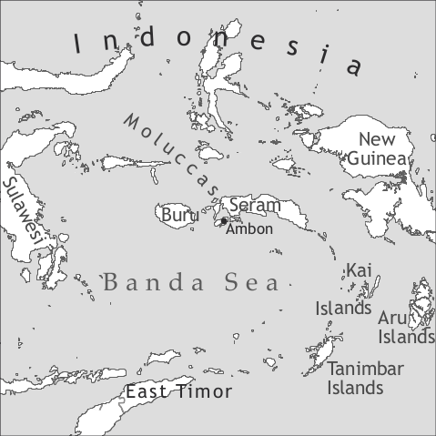

by Scott Paauw

Ambon Malay is spoken in the Indonesian province of Maluku, located in the central and southern Moluccas Islands in eastern Indonesia, by about 200,000 native speakers (Gordon 2005) located on the island of Ambon, the neighbouring islands of Saparua, Haruku and Nusa Laut, along the southern coast of Seram Island and in urban locations in the southern Moluccas. In addition, it is widely used as a second language throughout the central and southern Moluccas, by as many as a million speakers. There are also significant communities of speakers of Ambon Malay in Jakarta (the capital of Indonesia) and in the Netherlands (where it is known as Melajoe Sini ‘Malay here’).
Ambon Malay is known as Malayu Ambong by its speakers, who often view it as an inferior variety of Indonesian. It is described as having “marginal intelligibility” with Indonesian (Gordon 2005) and “difficult intelligibility” with North Moluccan Malay (Gordon 2005). Although it is regarded as a “Low” variety when compared to Indonesian, it is a “High” variety for speakers of vernacular languages in the Moluccas, and occupies a position between the vernaculars and Indonesian in terms of prestige. It is a marker of regional and ethnic identity in the Moluccas.
Ambon Malay is one of several varieties spoken in eastern Indonesia which are historically descended from the trade language known as Vehicular Malay. Malay has been known in the Moluccas, as a trade language, for centuries. Blust (1988) estimates that Malay has been spoken in Ambon for over 1000 years, though, without written records, it is difficult to know precisely how long Malay has been spoken in the region. When Europeans first arrived in the Moluccas in the early 16th century, Malay was known in trading centres throughout the region, including Ambon, which, although it was not originally the source of the spices which traders sought, had a protected harbour in which traders traditionally waited out the monsoon season from February to May, a tradition which was adopted by European traders in the region as well. Malay was spread as a lingua franca by these pre-European traders, who also used Malay as the primary means of spreading the Muslim religion in the eastern islands. The modern city of Ambon, also known as Amboina, did not exist before the Portuguese established a trading centre on the southern shore of Ambon Bay in 1524. Over time, this location gained importance for the Portuguese, especially after the Portuguese built a fort there in 1569 and after the Portuguese community which had settled in Ternate fled there in 1575. In 1546 the well-known missionary Francis Xavier visited the Moluccas and wrote from Ambon that “Each of these islands has its own native language and there are some islands where they speak differently at each place [on the island]. The Malay language, which is what they speak in Malacca, is very widespread in these parts.” (Grimes 1991: 95, quoting Jacobs 1974–1984, vol. 1: 13–14).
During the era of extensive Portuguese trade in the area, which lasted until 1605, when the Portuguese surrendered their fort in Ambon to the Dutch, many Portuguese loan words entered the Malay spoken in the Moluccas. Although varieties of Malay in the western part of the Malay Archipelago have a significant number of loan words from Portuguese, there are far more in Ambon Malay, including kinship terms and pronouns (Abdurachman 1972). Under the Portuguese, and later the Dutch, Malay, which had previously served as the vehicle for the spread of Islam, became identified with the spread of Christianity. On the island of Ambon today, there is an even divide between Christians and Muslims. The Christians, for the most part, are native speakers of Ambon Malay, and the Muslims, with few exceptions, are native speakers of vernacular languages.
The Dutch initially attempted to make Ambon a colony “where the Dutch language ruled” (Grimes 1991: 97, quoting Brugmans 1938: 211), but soon found this would not work and settled on Malay as the language of education and administration. The Dutch authorities attempted to introduce literary Malay or High Malay, through a decree in 1689, which created a serious gap in communication initially, and eventually led to the diglossia still found in the region (which has been reinforced by education in Standard Indonesian since Indonesian independence in 1945). The Dutch church also decided upon literary Malay as its vehicle for spreading the gospel, which led to a situation in which the parishioners had little understanding of the scriptures or sermons (Steinhauer 1991).
Although Malay has been spoken in Ambon for many centuries, it is unclear precisely when the language began to change from a second language used as a lingua franca to a native language used by a specific community. It is clear that the language had crystallized and had become sufficiently divergent from the Malay of western Indonesia for the Dutch authorities to issue a decree in 1689 mandating education in Standard Malay, and this could be an indication that a community of native Malay speakers existed at that time. Grimes (1991) takes the position that native speakers only began to appear in the 19th century. It is certain that by the early 19th century, there was indeed a community of native Malay speakers, and today the Ambon Malay language continues to gain new speakers at the expense of speakers of vernacular languages throughout the central and southern Moluccas.
Ambon Malay has been influenced by the local vernacular languages of Ambon Island, some of which have been replaced by Ambon Malay. The vernaculars which are still spoken on Ambon (chiefly on the northern Hitu peninsula of the island, by Muslim communities) and the Lease Islands (Haruku, Saparua, Nusa Laut) are Asilulu, Hitu, Haruku, Laha, Larike-Wakasihu, Nusa Laut, Saparua, Seit-Kaitetu, and Tulehu.
A Portuguese creole, now extinct, was once spoken on Ambon.
All speakers of Ambon Malay are at least bilingual, with many speaking more than two language varieties. Nearly all speakers are able to use the national language, Indonesian (Bahasa Indonesia) with varying degrees of competence. Indonesian is the High form in a diglossic relationship with Ambon Malay as the Low form. The two languages are in a kind of post-creole continuum, with varying degrees of influence from Indonesian on Ambon Malay, depending upon a speaker’s education and the domain. Indonesian is used in education, government administration, the media and some workplaces, with Ambon Malay serving as the language of home and community and daily interaction. Ambon Malay is rarely found in the media, apart from some newspaper headlines, newspaper cartoons and columns, advertising and special features on radio and television. However, Ambon Malay has a strong influence on the Indonesian used in official contexts, education, and the media, with speakers for the most part unable to draw a firm line between the two languages.
There is variation in Ambon Malay, with distinct dialects developing, chiefly in urban centres, in other regions of the province. These varieties include identified dialects in the Kei islands, the Aru Islands, the Tanimbar Islands and the Babar Islands. These variants of Ambon Malay remain undescribed.
|
Table 1. Vowels |
|||
|
front |
central |
back |
|
|
close |
i |
u |
|
|
mid |
e |
o |
|
|
open |
a |
||
In common with other contact Malay varieties of eastern Indonesia, Ambon Malay has five vowels. It is likely that the trade language which lexified Ambon Malay, Vehicular Malay, had a schwa, which was lost when the parent variety of eastern Indonesian contact Malay varieties, Eastern Indonesia Trade Malay, was formed. Unlike other contact varieties of Malay, the schwa does not occur at all in Ambon Malay, even in the speech of educated speakers who otherwise show significant influence from Indonesian. Schwa sounds which occurred in the lexifier language were replaced in Ambon Malay (and other eastern varieties of Malay) by other vowel sounds, employing specific patterns, or by loss of the schwa altogether, creating consonant clusters (which were not found at all in the lexifier). The loss of the schwa has resulted in phonemic stress, with pairs of words such as 'barat (‘west’ < barat) and ba'rat (‘heavy’ < bərat). Many vowel sequences are possible, but these are best analyzed as bisyllabic, rather than as diphthongs. The diphthongs /ai/ and /au/ which occur in western varieties of Malay have become the monophthongs /e/ and /o/ in eastern varieties of Malay, including Ambon Malay.
There are 19 consonants in Ambon Malay. In the chart, the forms used in the standard orthography are indicated in angle brackets where they differ from IPA characters. The orthographic forms of these sounds are used in the examples in this survey.
|
Table 2. Consonants |
|||||||||
|
bilabial |
labio-dental |
labio-velar |
alveolar |
palatal |
velar |
glottal |
|||
|
plosive |
voiceless |
p |
t |
c <c> |
k |
||||
|
voiced |
b |
d |
ɟ <j> |
g |
|||||
|
nasal |
m |
n |
ɲ <ny> |
ŋ <ng> |
|||||
|
trill |
r |
||||||||
|
fricative |
f |
s |
h |
||||||
|
lateral |
l |
||||||||
|
glide |
w |
j <y> |
|||||||
Of these consonant sounds, all were found in the lexifier except /f/, which is an innovation in eastern varieties of Malay, and occurs solely in borrowed words (primarily from vernacular languages of eastern Indonesia, but also in words borrowed from Portuguese, Dutch, and English). The consonant /h/ only occurs word-initially and word-medially, and only occurs in borrowed words in basilectal Ambon Malay. Although the lexifier allowed a wide variety of word-final consonants, Ambon Malay generally only allows /ŋ/, /s/, /l/, and /r/. The word-final nasal sounds found in the lexifier, /m/, /n/ and /ŋ/, have merged in Ambon Malay (and some other eastern contact varieties of Malay) as /ŋ/. When a speaker is speaking in a higher register (i.e. sounding more “Indonesian”), more final consonants can appear, including other word-final nasals.
Nouns are morphologically invariable. Nouns may be reduplicated to indicate diversity or totality, depending on the specific context:1
Nouns which are reduplicated to indicate diversity can give the meaning of plurality in some instances. This usage may have developed through influence of Indonesian. Such marking is optional, and generally does not occur if a number is specified or the context is clear.
There are no definite or indefinite articles, though demonstratives may be used to mark previously referred to elements. Demonstratives are also used to mark generic nouns.
There are two demonstratives in Ambon Malay, ini ‘this; close to speaker’ and itu ‘that; away from speaker’. In addition, the 3sg.neuter pronoun akang can function as a demonstrative. Ini, itu, and akang can function as the head of an NP, as subject, object or object of a preposition. All three forms can precede a head noun to modify it, while only ini and itu (and their short forms ni and tu) may follow a head noun. Demonstratives can also occur in combinations, preceding or bracketing the noun. It is likely that in some cases demonstratives occurring after the noun are influenced by the Indonesian construction, which only allows this position, and that the prenominal position was the original unmarked position in Ambon Malay.
The possessive construction in Ambon Malay takes the form “possessor pung possessed”, in which pung is the possessive marker. The possessive marker pung can take its Indonesian form punya, appear as pong, or be reduced to ng or even Ø. On occasion, some educated speakers also employ the Indonesian construction, with a possessive enclitic attached to the noun, but this form stands out as borrowed from the standard variety.
The possessive morpheme pung can also serve as an intensifying particle.
Adjectives, which are a sub-class of verbs, follow the noun (ruma barsi ‘clean house’), just like other relative clauses (see §8 below).
Comparatives are formed by the adjective-marker-standard construction “np1 lebe adj dari np2” [np1 more adj from np2], with both the elements lebe ‘to be more than’ and dari ‘from’ occurring optionally, as in the constructed example (9).
Personal pronouns have a full form and one or more variant forms which are restricted in some cases to subject or object position. Full forms can be used in either subject or object position or may stand alone as one-word sentences. Subject and object pronouns may be omitted if the context makes clear who is referred to.
The 3sg pronoun dia generally takes a human referent, but for some speakers, it can have a non-human or inanimate referent. More commonly, akang is used for non-human referents. The 2sg pronoun ose is from Portuguese você ‘you, thou’, while the 2sg pronoun ale is from a local language. 2sg pronouns are only used in informal/familiar contexts. In formal contexts, a title or title + name are used. Both ose and ale are markedly impolite, but the short form se does not have this marking, although it too is only used in informal contexts.
The plural pronouns were originally formed from singular pronoun + orang ‘person’, though this etymology is no longer transparent. The 2pl and 3pl pronouns have the same form, and derive their meaning from the context.
|
Table 3. Personal pronouns and adnominal possessives |
|||
|
one word |
subject |
object |
|
|
1sg |
beta |
beta; bet; be |
beta |
|
2sg |
ose; os; se |
ose; os; se |
ose; os; se |
|
2sg |
ale |
ale; al |
ale |
|
3sg |
dia |
dia; di; de |
dia |
|
3sg.formal |
antua; ontua; (etc.) |
antua; ontua;etc. |
antua; ontua;etc. |
|
3sg.n |
— |
akang |
akang; kang; ang |
|
1pl |
katong |
katong; tong |
katong |
|
2pl |
dorang; dong |
dorang; dong |
dorang; dong |
|
3pl |
dorang; dong |
dorang; dong |
dorang; dong |
Numerals, which are optionally followed by a classifier, typically follow the noun they modify, and it can be assumed that “noun+numeral(+classifier)” is the standard order in Ambon Malay. Indonesian influence has led to the increasing appearance of “numeral(+classifier)+noun” order.
Ordinal numerals are formed by a prefix, ka- (e.g. dua ‘two’; ka-dua ‘second’).
There is no tense marking in Ambon Malay. Time is encoded through the use of time adverbs and through context. Modals and aspect markers, however, play an important role. There are a number of elements which can be part of the verb complex in Ambon Malay, and they fit into specific pre-verbal slots. All slots apart from the verb base are optional, and, indeed, often a bare verb base occurs. The first class of aspect markers in Table 4 operates on the predicate (or verb-complex) level (as does the negative), because they can combine with noun phrases and prepositional phrases when these have predicate function. The second class of aspect markers operates in the verb phrase, and this distinction is reflected in the organization of the table, which is based partly on van Minde (1997: 188). Within the verb phrase, the verb can be followed by adverbs of degree or manner or by another verb phrase. The lists of members of each category are illustrative and not necessarily exhaustive.
|
Table 4. The verb complex |
|||||||
|
verb complex (or predicate) level |
verb phrase |
||||||
|
aspect 1 |
neg |
aspect 2 |
modal |
degree |
aux |
prefix2 |
verb |
|
su pfv |
seng neg |
ada prog |
mau ‘want’ |
kurang ‘little’ |
kasi caus |
ba- |
|
|
masi ‘still’ |
jang proh |
mau fut |
sadiki ‘a bit’ |
dapa ‘get’ |
ta- |
||
|
balong ‘not yet’ |
musti ‘must’ |
lebe ‘more’ |
pi ‘go’ |
baku- |
|||
|
bole ‘may’ |
sama ‘equal’ |
jaga hab |
|||||
|
bisa ‘can’ |
talalu ‘too’ |
suka hab |
|||||
|
reduplication.3 |
|||||||
Aspect can be marked by aspect markers such as su pfv and masi ‘still’ which operate on the predicate level (the ‘Aspect 1’ category in Table 4), and by the marker ada, which can be a marker of prog or realis, and which operates on the verb phrase level (‘Aspect 2’). In addition, the modal mau can function as a modal meaning ‘want’ or as an aspect marker denoting future aspect.
The progressive or realis marker ada is distinguished from the verb ada ‘have; exist; there is.’ The aspect marker ada cannot be negated, while the verb ada may be negated.
Complex verbs consist of a verb preceded by one of the verbs in the aux column in the table above, e.g. kasi/kase ‘give, caus’, dapa ‘can, get, find’, bikin/biking ‘make’, jaga ‘watch’ or suka ‘like’. Verbs combined with dapa have an added meaning of ability or undergoing an experience. Dapa can also be combined with verbs to convey a passive meaning. Kasi/kase and bikin/biking are also used as causatives, while suka and jaga are also used as habitual markers. All these forms are very productive.
Complex events may be expressed through two or more consecutive verbs or serial verbs. The first verb is from a limited set, such as pi/pigi ‘go’, bawa ‘bring’ or cari ‘look for’. These verbs generally describe motion.
There is no copula. Predicatively used noun phrases, adjectives (which are a sub-class of verbs), and locative phrases can simply follow the subject, combined with optional aspect markers and modals where necessary, as in the following constructed examples.
Simple clausal negation is expressed by the negators seng ‘no, not’ (< Portuguese sem ‘without, not’) tar/tra ‘no, not’ or tida ‘no, not’ (a recent introduction from Indonesian tidak). These negators follow the subject and precede the verb, and can also occur after the main verb as part of a modifying VP. Seng is by far the most common negator, while tar/tra marks a more emphatic negation.
Ambon Malay has three productive verbal prefixes: ba-, ta-, and baku-4. In addition to productive use of these prefixes, there are a number of words in which the ba- prefix is frozen as part of a loanword from a variety of Malay in which it was productive (e.g. bakalai ‘to fight’; bataria ‘to yell, shout’).
The prefix ba- has four uses in Ambon Malay:
(i) If the base is a noun, the meaning of ba- is roughly ‘to have x’ or ‘to use x’.
(27) daong ‘leaf’ ba-daong ‘to have leaves’
tangke ‘stem’ ba-tangke ‘to have stems’
(ii) If the base is a transitive verb, ba- creates an intransitive verb with a reflexive meaning.
(28) baso ‘to wash’ ba-baso ‘to wash oneself’
goso ‘to rub’ ba-goso ‘to rub oneself’
(iii) Also with transitive verbs, ba- creates an intransitive verb with iterative, durative or habitual meaning.
(29) ambur ‘to scatter’ ba-ambur ‘to make a mess’
mara ‘to be angry’ ba-mara ‘to be angry (all the time)’
(iv) With transitive verbs, ba- can denote a more or less permanent quality of the subject, a deliberate act of the agent or the durative or habitual nature of the action.
(30) batu ‘to cough’ ba-batu ‘to cough repeatedly’
sombong ‘conceited’ ba-sombong ‘to act conceited’
The prefix ta- also forms verbs and creates the meaning that the action happens accidentally or by an unexpected or involuntary action.
As with the prefix ba-, there are occurrences of the prefix ta- which are not the result of a productive process, but rather a frozen form borrowed into the language:
(33) tua ‘old’ ta-tua ‘old’ (in orang tatua ‘parents’)
lalu ‘next’ ta-lalu ‘too’
The prefix baku- forms reciprocal verbs, and occurs in two intransitive structures: “subject baku-V” and “agent baku-V deng goal”.
Verbal reduplication is a very productive and common process in Ambon Malay. The most usual purpose of reduplication of the base is iteration, to indicate a repeated activity or that an action has been going on for an extended time. It can also indicate plurality of an action or event, or that an action, event or state is intensified. The base may be a verb, a modifier or a preposition. In negative sentences, it is the negative aspect which is intensified or made more emphatic.
Ambon Malay is an isolating language, with little productive morphology of any kind, apart from reduplication. As a result, word order takes a very important role, and the basic word orders of “subject-verb-object” (in transitive clauses) and “subject-verb” (in intransitive clauses) are adhered to, as in the following typical examples, with only rare, highly unusual exceptions.
Two constructions are possible for ditransitives: a double object construction, with the recipient preceding the theme, and a construction placing the recipient in a prepositional phrase following the theme. The latter construction occurs more frequently.
Existential constructions make use of the verb ada ‘to exist’. There is no subject in existential sentences.
A pronoun cross-referencing the subject can occur immediately after the subject, preceding the verbal complex. These function as topic-comment constructions, and occur frequently, perhaps influenced by the prevalence of this construction in the substrate languages of the region (the construction did not occur in the lexifier, Vehicular Malay).
The imperative is formed by the bare verb or the auxiliary kas(i) ‘give’ + bare verb (following an optional second-person pronoun), and the negative imperative or prohibitive, by jang ‘don’t’ + the bare verb.
Polar questions are generally indicated by intonation alone. The clause-final question particle ka can optionally be employed.
Content questions can be formed using one of a set of questions words, which generally appear in situ, and question-word questions have a distinctive pattern of intonation. The primary syntactic functions vary by question word. Apa ‘what’, mana ‘which’, sapa ‘who’ and barapa ‘how many’ may function as subject, predicate or object. Bagaimana ‘how’, mangapa ‘why’ (or its Indonesian counterpart kenapa), par apa ‘why’, and di mana ‘where’ may only function as predicates. Apa tempo ‘when’ may not function as subject, object or predicate. For emphasis, question words (when representing a predicate or an object) may be moved to sentence-initial position.
Passives are formed with the auxiliary dapa ‘get’.
Topic-comment organization can be achieved through left-dislocation.
Two words, phrases or clauses in Ambon Malay may be linked with a variety of conjunctions. The coordinating conjunctions include deng ‘and’ (identical with the preposition ‘with’), tapi ‘but’, mar ‘but’, jadi ‘so’, des ‘so’, lalu/la ‘(and) then’, and kong ‘then’. There are also a few subordinating conjunctions, which include the complementizers yang and kata and a variety of adverbializers.
Examples of coordinating constructions can be found in example (54).
Adverbial subordinators express a variety of semantic relations, such as purpose (par, for, buat ‘to, so that’); exclusion (sondor ‘without’); manner (sama, macang ‘like, as’); conditional (kalo ‘if, when’); concessive (biar ‘although’); resultative (sampe ‘until’); and temporal (waktu ‘when’, sabang ‘whenever’).
In basilectal Ambon Malay, relative clauses follow the noun and have no special marking. However, the Indonesian complementizer yang is often found, particularly among educated speakers. Examples of both constructions follow. The structures which occur without the relative marker yang can also have a non-relative meaning as simple juxtaposed clauses. The intended meaning depends upon the context.
Direct or indirect speech can be reported with the complementizer kata ‘word; say’.
In common with other Malay varieties of eastern Indonesia, and with many of the vernacular languages of eastern Indonesia, Ambon Malay has a spatial deixis system developed around existence on an island. This feature almost certainly developed in Ambon and did not exist in the lexifier, due to the similarities between the system employed in Ambon Malay and the systems used in the vernacular languages of Ambon Island, which were the principal substrate languages. The deictic expressions used include nae ‘climb (up), go up’ = ‘go away from the coast’; turung ‘descend, go down’ = ‘go toward the coast’; ka lao ‘toward the sea, seawards’; di lao ‘toward the sea, seawards’; ka dara ‘toward the land, landwards’.